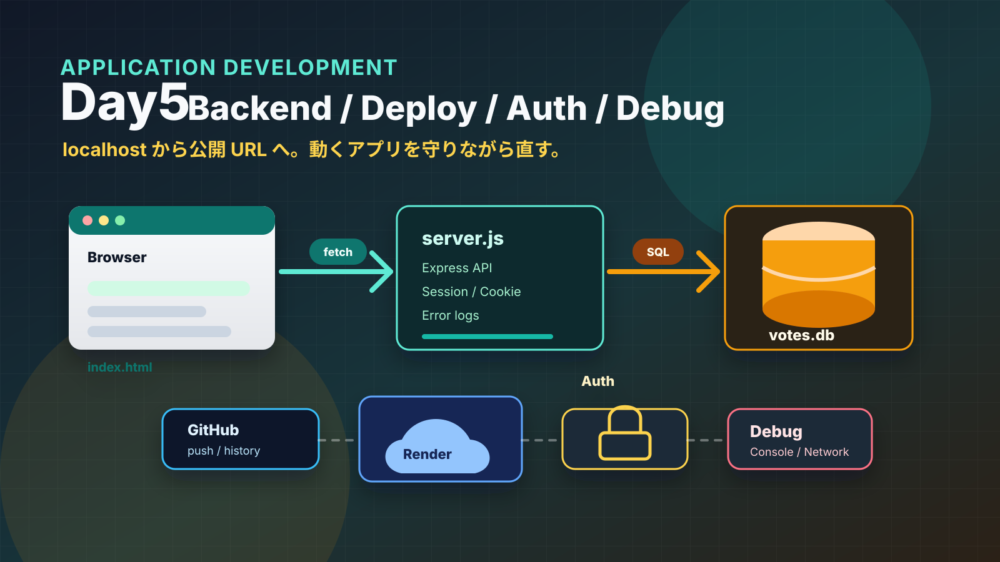
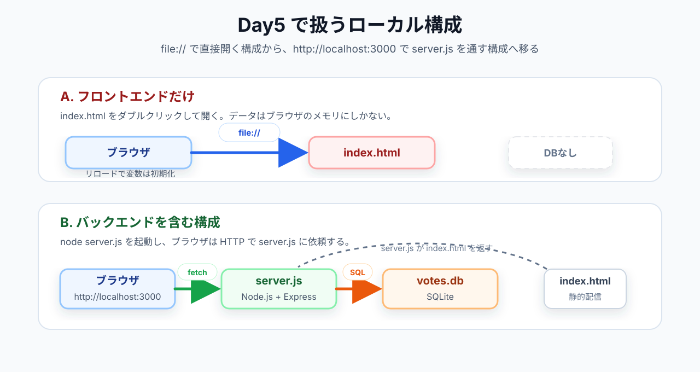
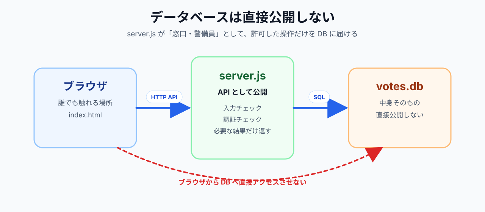
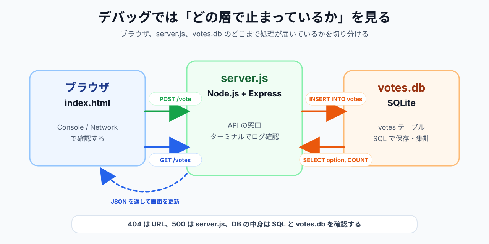
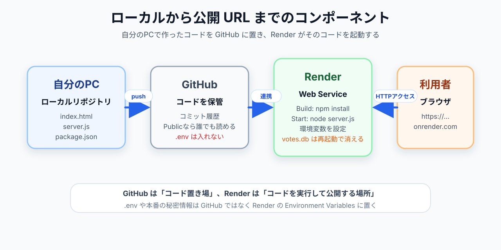
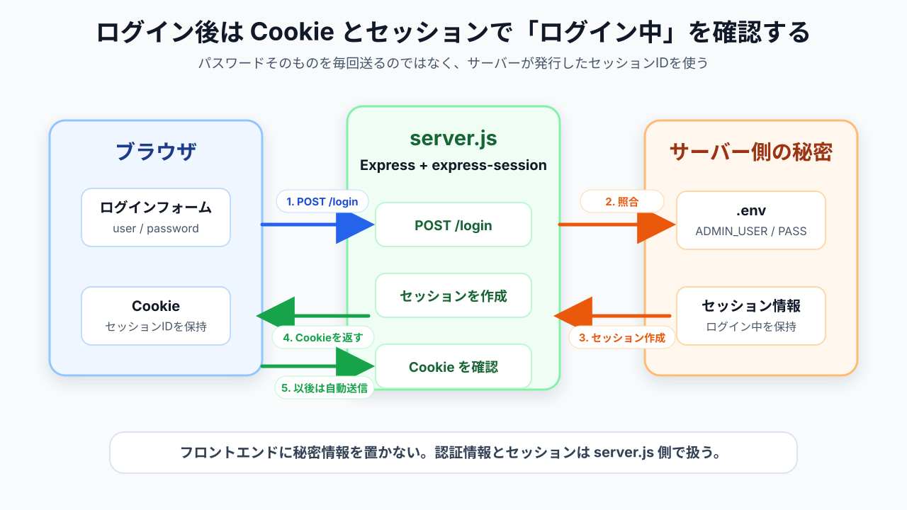
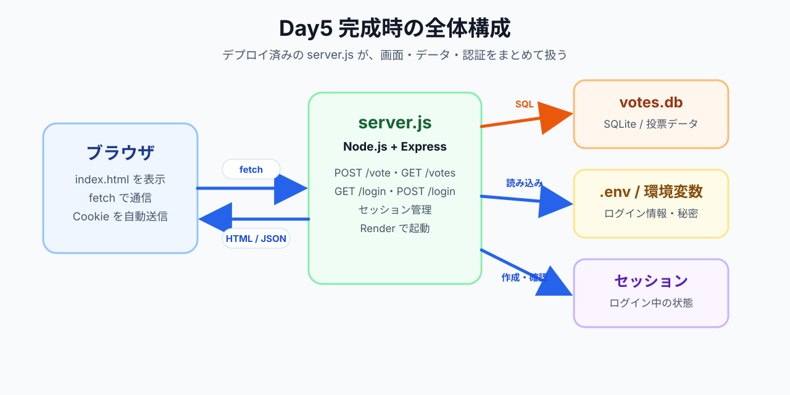

votes.db
.gitignore
/admin
Day6・Day7 の総合演習に必要な「フルスタックを自分で組める」状態をここで完成させる
この連休（GW）でいちばん良かったことは？
OpenAI が「Codex for almost everything」を発表。目玉は background computer use
Day4 から使っている Gemini CLI は「チャットで依頼する」タイプ。Codex の新機能は「画面を見て自分でクリックする」タイプ
OpenAI Codex — Computer Use（1分30秒）
背景：SpaceX の「Colossus 1」（300 MW 以上・GPU 22 万台超）を丸ごと借りる契約。今後は宇宙空間での計算基盤整備も検討
「ロケットの SpaceX」が「AI の Anthropic」に計算資源を貸す異業種連携。Gemini CLI（Google）と Claude Code（Anthropic）は AI コーディングエージェント市場で激しく競争中
講義中は手元で同じフォルダを開いて、コードを見ながら聞いてください
VSCode
app-dev-day4
index.html
server.js
フォルダが見つからなければデスクトップ・書類フォルダを確認。それでも無ければ講師に声をかけてください
Day4 の途中で「アプリの開き方」が変わったことに気づいたか？
file:///Users/...
http://localhost:3000
https://〇〇.onrender.com
http://
localhost
3000

file://
なぜ file:// で fetch できないか：ブラウザのセキュリティ（同一オリジンポリシー）。http://localhost:3000 経由なら同じオリジンの通信になるので許可される
この 3 層の言葉で Day4 のアプリを言い直せれば OK
「常に起動していて、リクエストを受け取って返事を返すプログラム」
身近なたとえ：
Day4 の server.js は後者。Node.js の上で動く
API（Application Programming Interface）＝ プログラム同士の窓口。「どの URL に・どんなメソッドで頼むと・どんな形式で返るか」を決めた仕様
GET /votes
POST /vote
{ success: true }
POST /login
POST /logout
ブラウザは「メニューに載っているもの」だけを頼める
フロントエンドだけだと困ること：
サーバーがあれば → 1 か所に集めて永続化・誰でも参照・秘密は隠す・安定実行

DB を直接ブラウザに公開してはいけない理由：
SELECT
DELETE
UPDATE
覚えておきたい：フロントは「誰でも見られる場所」、サーバーは「自分のコードだけが知っている場所」。秘密・パスワード・API キーはすべてサーバー側に置く
⇧⌘X
Ctrl+Shift+X
SQLite Viewer
votes
id
option
created_at
SQL のテーブルは「表計算ソフトのシート」と同じ構造
Gemini CLI ― 全件取得
votes.db に接続して、votes テーブルの中身を全件表示して。
件数を数える
votes テーブルに何件のデータが入っているか数えて。
→ 出力された結果を SQLite Viewer の画面と見比べる
1 件追加してみる
votes テーブルに「ラーメン」という選択肢のデータを 1 件追加して。
→ SQLite Viewer の更新ボタンで行が増えたことを確認
ここで掴んでほしいこと：SQL（INSERT・SELECT）はデータの「追加」「取得」を指示する言語。server.js の中でも同じ SQL が使われている
INSERT
git init
git status
+
git add
git commit -m "..."
ファイル編集 → ステージング → コミットを繰り返す。VSCode のボタン操作と裏で動くコマンドの対応を意識する
node_modules/
.env
.DS_Store
Thumbs.db
Gemini CLI への依頼例：
このプロジェクト用の .gitignore を作って。Node.js + Express + SQLite のプロジェクトです。
1 行ずつ覚える必要はない。**「リクエストが来てから返事まで」**をイメージできれば OK
フェーズ A：起動時に 1 回だけ
CREATE TABLE IF NOT EXISTS
app.listen(3000)
フェーズ B：リクエストが来るたびに
app.get('/votes', ...)
app.post('/vote', ...)
app.use(express.static('.'))
行ごとの細部は覚えなくていい。わからない部分は Gemini CLI に説明させる
流れの説明
server.js を読んで、リクエストが来てから返事を返すまでの流れを、 ステップごとに日本語で説明して。 初心者でもわかるように、専門用語が出てきたら都度説明してください。
ピンポイント質問
app.use(express.json()) は何をしているコード？ これがないとどうなる？
「コードを読む練習」と「Gemini CLI への質問の練習」を兼ねる
Day4 では「作って」と一言で頼むパターンが多かった
投票アプリを作って
→ 何を作るかが曖昧。意図と違うものが出てきても気づきにくい。動かなくても どこを直せばいいか分からない
今日は「段階を踏んで対話する」使い方を練習する
Step 1：現状を確認させる
いまのフォルダの構成を確認して、何のプロジェクトか教えて。
Step 2：変更案を出させる（まだ変更しない）
投票アプリの選択肢を「ラーメン / 寿司 / カレー」から 「コーヒー / 紅茶 / 緑茶」に変えたい。 どのファイルのどの部分を変えればいいか教えて。 まだファイルは変更しないでください。
Step 3：差分で変更を依頼
問題なさそうです。変更してください。
Step 4：VSCode の diff ビューで確認 → 受け入れる
「Step 2 で案を出させて、確認してから Step 3 で変更させる」のが対話型のキモ
エラーメッセージをそのまま貼り付ける
node server.js を実行したら以下のエラーが出ました。 原因と修正方法を教えて。 Error: Cannot find module 'express' at Function.Module._resolveFilename ...
→ エラー文をコピペ + 「原因と修正方法を教えて」 が基本テンプレート
Day4 と同じ構成（フロント + Node.js + SQLite）を 自分のテーマで作る
要件：「複数人が答えを送れる」「送った内容がリロード後も残る」
テーマ例：
凡例： Gemini CLI ／ VSCode の GUI ／ 別ターミナル（サーバー起動時）
Step 0：デスクトップに app-dev-day5 を作成 → VSCode で開く → 統合ターミナルで gemini 起動 → Source Control で Initialize Repository
app-dev-day5
gemini
Step 1： 3.0 というフォルダを作って。
3.0 というフォルダを作って。
Step 2： 構成案を聞く → 提案を確認 → その構成で作ってください。フレームワークは使わず 1 つの HTML にまとめてください。
その構成で作ってください。フレームワークは使わず 1 つの HTML にまとめてください。
Step 3： このプロジェクト用の .gitignore を作って。Node.js + Express + SQLite のプロジェクトです。 → ステージング → コミット（例：index.html の初期実装）
index.html の初期実装
Step 4： server.js を作る
3.0フォルダ内で Node.js + Express + better-sqlite3 で投票アプリのバックエンドを作って。 - POST /vote で option を受け取り votes.db に保存 - GET /votes で option ごとの集計を JSON で返す - index.html を静的配信、localhost:3000、テーブル自動作成 他はまだ作らないで。
Step 5： npm install を実行して、必要なパッケージをインストールして。
npm install を実行して、必要なパッケージをインストールして。
Step 6： server.js を起動して。（ 別ターミナルでバックグラウンド実行）
server.js を起動して。
Step 7： 段階を踏んで依頼
index.html のボタンクリック時に POST /vote を fetch で呼び出して。 ページ読み込み時に GET /votes を呼び出して集計結果を表示して。 fetch を使って非同期で処理すること。 まず変更案を説明してから、確認を取ってから変更してください。
Step 8：動作確認
サーバーと接続・データ永続化
Step 1〜8 で作ったアプリに、自分で考えた機能を 1 つ追加
進め方
変更してください。
リセット機能を追加
エラーが出ても、自分でコードを直す必要はない。Gemini CLI と会話で解決する
構成を図化してもらう
今のプロジェクトの構成を Mermaid の図で表してください。 ブラウザ・サーバー・データベースの関係と、 それぞれの間でどんなやりとり（リクエスト・SQL）が起きているかを含めてください。
→ mermaid.live に貼って表示 / VSCode の Mermaid プレビュー拡張でも可

① エラーメッセージをコピー：VSCode ターミナルの赤い文字を選択
② Gemini CLI に原因を聞く
以下のエラーが出ました。原因を教えてください。 （エラーメッセージをここにペースト）
③ 説明が難しければ聞き返す：もっと簡単に教えてください。
もっと簡単に教えてください。
④ 理解できたら直してもらう：原因はわかりました。修正してください。
原因はわかりました。修正してください。
自分でエラーを読んで理解しようとしなくていい。「聞く → 直してもらう」の繰り返しがデバッグの基本
今のアプリは localhost:3000 ＝ 自分のパソコンの中だけ
localhost:3000
他の人に使ってもらうには：ローカルのコード → GitHub → Render で起動

コードをインターネット上に保管・管理するサービス
.git
メリット：バックアップ・Render と連携した自動デプロイ・URL で共有・履歴で過去に戻れる・チーム開発（Day6・7 で活用）
「コミットを GitHub に送る」＝ プッシュ（push）
Public リポジトリの中身は 世界中の誰でも読める。絶対に含めてはいけないもの：
.pem
.db
例：SESSION_SECRET=abc123 や ADMIN_PASSWORD=password が .env ごと公開 → 不正アクセスや課金爆発の事例多数
SESSION_SECRET=abc123
ADMIN_PASSWORD=password
一度プッシュした秘密情報は取り戻せない。.gitignore に .env を必ず含める
⇧⌘G
Ctrl+Shift+G
…
確認：https://github.com/<your-account>/app-dev-day5 を開いて server.js 等が見える / .env が無いことを必ず確認
https://github.com/<your-account>/app-dev-day5
GitHub と連携してアプリを公開できるクラウドサービス
node server.js
→ コードを GitHub に push するだけで、外部 URL で公開されたアプリが自動的に更新される
授業では無料プランを使う。以下の制限を把握しておく：
本番では SQLite ではなく PostgreSQL などの DB サーバーを別に立てて永続化に対応する
Node
main
3.0
npm install
Free
Root Directory 3.0 必須：server.js はサブフォルダにあるため
デプロイ完了後 https://app-dev-day5-xxxx.onrender.com が表示される
https://app-dev-day5-xxxx.onrender.com
チャレンジ②：質問文か選択肢のテキストを 1 つ変更し、自分の手で完結させる
git push を実行して。
URL を知っていれば、いま誰でも以下のことができる：
「このアプリが本当に多くの人に使われたら、どんな問題が起きるか？」
→ Slack に投稿してください
混同しがちだが別物。両方そろって初めて「守られたアプリ」になる
認証：本人かどうか （門の前での本人確認） 認可：何ができるか （建物に入った後、どの部屋に入れるか）
今日：主に「認証」を実装 ／ 「認可」は /admin の保護で軽く触れる
実装する前に「世の中にどんな方式があるか」を把握する
実サービスは複数を組み合わせる（例：一般ユーザー ① + ⑤、管理者 ⑥）
なぜこれから始めるか：
ここを理解できれば、JWT も OAuth も MFA も土台が出来る
「ログイン中という状態をサーバーが覚えておく仕組み」
イメージは イベントのリストバンド

「動くだけ」のログインは作れる。本番運用で求められる勘所：
httpOnly
secure
sameSite
本日のゴール：「動くログインを作る・なぜ必要か説明できる」
GET /login
/
/login
/（投票アプリ本体）はセッションが無ければ /login にリダイレクト
認証情報は .env に書く（コードに直書きしない）
SESSION_SECRET=（推測されにくい長い文字列） ADMIN_USER=admin ADMIN_PASS=password123
Gemini CLI
ログインした時のみ投票アプリを表示できるようにしてください。 - express-session でセッション管理、シークレットは .env の SESSION_SECRET から - 管理者の認証情報も .env から：ADMIN_USER / ADMIN_PASS .env に以下を追加（無ければ作成）： SESSION_SECRET=mysessionsecret ADMIN_USER=admin ADMIN_PASS=password123 .gitignore に .env と cookies.txt を追加。 npm install express-session dotenv も実行して。
サーバーを再起動して。 → ブラウザで確認
サーバーを再起動して。
admin
password123
.env は GitHub にも Render にも送られない（.gitignore 対象） Render 側に環境変数を別途登録する必要がある
Step 1：コミット → git push を実行して。
Step 2：Render ダッシュボード → 対象サービス → Environment → Add Environment Variable
SESSION_SECRET
mysessionsecret
ADMIN_USER
ADMIN_PASS
→ 保存で自動再起動 → 外部 URL /login で動作確認 / GitHub に .env が無いことも確認
ログイン済みの場合のみアクセスできる /admin を新たに作る
voted_at
進め方：
確認：/admin がログイン後だけ見える / 未ログインだと /login にリダイレクト
Slack に「できる / 怪しい / まだわからない」で投稿してください
① .gitignore に何を入れるべきかを説明できる ② Gemini CLI と対話的に進められた（一発で全部頼まず、段階を踏めた） ③ エラーを Gemini CLI に貼り付けて原因を聞き、修正を依頼する流れで対処できた ④ GitHub にプッシュできた ⑤ Render にデプロイして外部 URL でアクセスできた ⑥ 認証なしで公開することのリスクを説明できる ⑦ /login でログインして投票アプリが表示された／未ログインで /login にリダイレクトされた ⑧ .env の値を Render の環境変数に登録して、外部 URL でもログインできた
「怪しい」「まだわからない」が多かった項目は Day6 の冒頭でフォローします
今日できた構成：

Day6・Day7（総合演習）でやること：
締め：今日詰まったポイント・疑問を Slack に 1 行書いてください（Day6 冒頭で取り上げます）